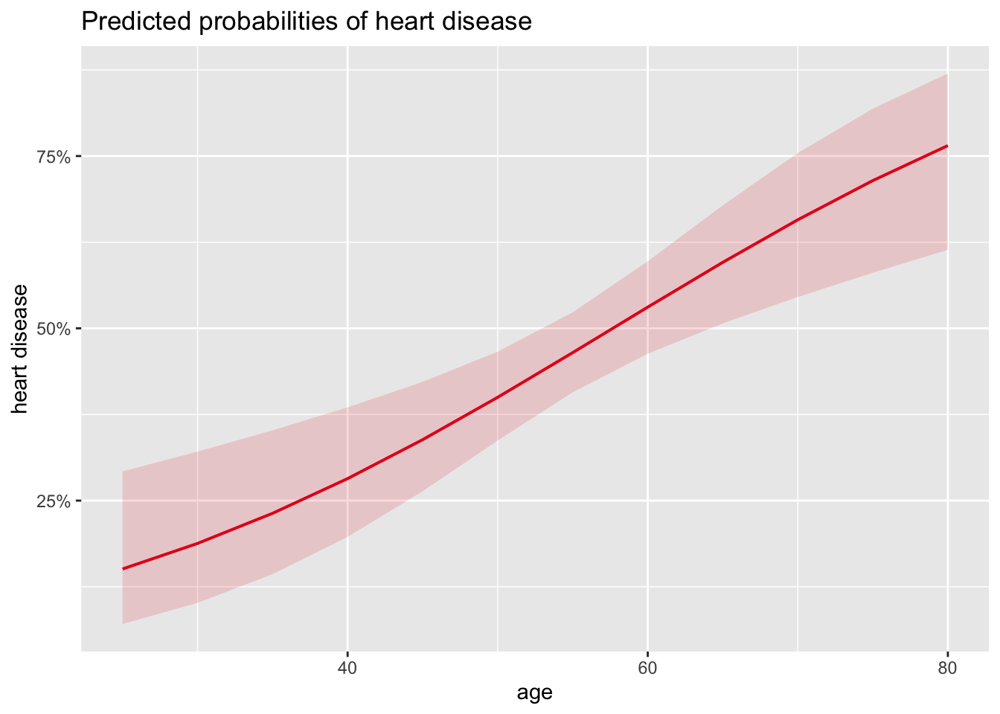
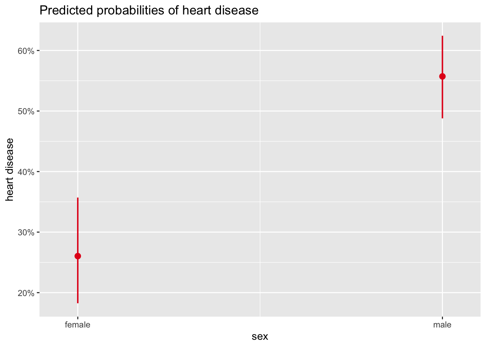

Previous reference: https://www.r-bloggers.com/2020/05/binary-logistic-regression-with-r/
Google search: binary logistic regression R Reference:
https://statsandr.com/blog/binary-logistic-regression-in-r/
# import and rename dataset
library(kmed)
dat <- heart
# select variables
library(dplyr)
library(maditr)
dat <- dat %>%
select(
age,
sex,
cp,
thalach,
class
)
# print dataset's structure
str(dat)## 'data.frame': 297 obs. of 5 variables:
## $ age : num 63 67 67 37 41 56 62 57 63 53 ...
## $ sex : logi TRUE TRUE TRUE TRUE FALSE TRUE ...
## $ cp : Factor w/ 4 levels "1","2","3","4": 1 4 4 3 2 2 4 4 4 4 ...
## $ thalach: num 150 108 129 187 172 178 160 163 147 155 ...
## $ class : int 0 2 1 0 0 0 3 0 2 1 ...
## - attr(*, "na.action")= 'omit' Named int [1:6] 88 167 193 267 288 303
## ..- attr(*, "names")= chr [1:6] "88" "167" "193" "267" ...For greater readability, we rename the variables cp, thalach and class with more informative names:
# rename variables
dat <- dat %>%
rename(
chest_pain = cp,
max_heartrate = thalach,
heart_disease = class
)We transform the variables sex and chest_pain into factor and set the labels accordingly:
# recode sex
dat$sex <- factor(dat$sex,
levels = c(FALSE, TRUE),
labels = c("female", "male")
)
# recode chest_pain
dat$chest_pain <- factor(dat$chest_pain,
levels = 1:4,
labels = c("typical angina", "atypical angina", "non-anginal pain", "asymptomatic")
)For a binary logistic regression in R, it is recommended that all the qualitative variables are transformed into factors.
In our case, heart_rate (our dependent variable) is currently encoded as integer with values ranging from 0 to 4. Therefore, we first classify it into 2 classes by setting 0 for 0 values and 1 for non-0 values, using the ifelse() function:
# recode heart_disease into 2 classes
dat$heart_disease <- ifelse(dat$heart_disease == 0,
0,
1
)We then transform it into a factor and set the labels accordingly using the factor() function:
# set labels for heart_disease
dat$heart_disease <- factor(dat$heart_disease,
levels = c(0, 1),
labels = c("no disease", "disease")
)Keep in mind the order of the levels for your dependent variable, as it will have an impact on the interpretations. In R, the first level given by levels() is always taken as the reference level.
In our case, the first level is the absence of the disease and the second level is the presence of the disease:
levels(dat$heart_disease)## [1] "no disease" "disease"# basic descriptive statistics
summary(dat)## age sex chest_pain max_heartrate
## Min. :29.00 female: 96 typical angina : 23 Min. : 71.0
## 1st Qu.:48.00 male :201 atypical angina : 49 1st Qu.:133.0
## Median :56.00 non-anginal pain: 83 Median :153.0
## Mean :54.54 asymptomatic :142 Mean :149.6
## 3rd Qu.:61.00 3rd Qu.:166.0
## Max. :77.00 Max. :202.0
## heart_disease
## no disease:160
## disease :137
##
##
##
## # save model
m1 <- glm(heart_disease ~ age,
data = dat,
family = "binomial"
)Results of the model is saved under the object m1. Again, similar to linear regression, results can be accessed thanks to the summary() function:
# print results
summary(m1)##
## Call:
## glm(formula = heart_disease ~ age, family = "binomial", data = dat)
##
## Coefficients:
## Estimate Std. Error z value Pr(>|z|)
## (Intercept) -3.05122 0.76862 -3.970 7.2e-05 ***
## age 0.05291 0.01382 3.829 0.000128 ***
## ---
## Signif. codes: 0 '***' 0.001 '**' 0.01 '*' 0.05 '.' 0.1 ' ' 1
##
## (Dispersion parameter for binomial family taken to be 1)
##
## Null deviance: 409.95 on 296 degrees of freedom
## Residual deviance: 394.25 on 295 degrees of freedom
## AIC: 398.25
##
## Number of Fisher Scoring iterations: 4# OR for age
exp(coef(m1)["age"])## age
## 1.054331In our case, it corresponds to the probability that a patient of age 0 develops a heart disease, which is equal to:
# prob(heart disease) for age = 0
exp(coef(m1)[1]) / (1 + exp(coef(m1)[1]))## (Intercept)
## 0.04516478This means that, if we trust our model, a newborn is expected to develops a heart disease with a probability of 4.52%.
For your information, a confidence interval can be computed for any of the OR using the confint() function. For example, a 95% confidence interval for the OR for age:
# 95% CI for the OR for age
exp(confint(m1,
parm = "age"
))## Waiting for profiling to be done...## 2.5 % 97.5 %
## 1.026699 1.083987Suppose we would like to predict the probability of developing a heart disease for a patient aged 30 years old:
# predict probability to develop heart disease
pred <- predict(m1,
newdata = data.frame(age = c(30)),
type = "response"
)
# print prediction
pred## 1
## 0.1878525It is predicted that a 30-year-old patient has a 18.79% chance of developing a heart disease.
Note that if you would like to construct a confidence interval for this prediction, it can be done by adding the se = TRUE argument in the predict() function:
# predict probability to develop heart disease
pred <- predict(m1,
newdata = data.frame(age = c(30)),
type = "response",
se = TRUE
)
# print prediction
pred$fit## 1
## 0.1878525# 95% confidence interval for the prediction
lower <- pred$fit - (qnorm(0.975) * pred$se.fit)
upper <- pred$fit + (qnorm(0.975) * pred$se.fit)
c(lower, upper)## 1 1
## 0.07873357 0.29697138If you are a frequent reader of the blog, you are probably know that I like visualizations. The plot_model() function available in the {sjPlot} R package does a good job of visualizing results of the model:
# load package
library("sjPlot")
# plot
plot_model(m1,
type = "pred",
terms = "age"
) #+ labs(y = "Prob(heart disease)")## Data were 'prettified'. Consider using `terms="age [all]"` to get smooth
## plots.
# save model
m2 <- glm(heart_disease ~ sex,
data = dat,
family = "binomial"
)
# print results
summary(m2)##
## Call:
## glm(formula = heart_disease ~ sex, family = "binomial", data = dat)
##
## Coefficients:
## Estimate Std. Error z value Pr(>|z|)
## (Intercept) -1.0438 0.2326 -4.488 7.18e-06 ***
## sexmale 1.2737 0.2725 4.674 2.95e-06 ***
## ---
## Signif. codes: 0 '***' 0.001 '**' 0.01 '*' 0.05 '.' 0.1 ' ' 1
##
## (Dispersion parameter for binomial family taken to be 1)
##
## Null deviance: 409.95 on 296 degrees of freedom
## Residual deviance: 386.12 on 295 degrees of freedom
## AIC: 390.12
##
## Number of Fisher Scoring iterations: 4# OR for sex
exp(coef(m2)["sexmale"])## sexmale
## 3.573933We can also visualize these results thanks to the plot_model() function:
# plot
plot_model(m2,
type = "pred",
terms = "sex"
) #+
#labs(y = "Prob(heart disease)")